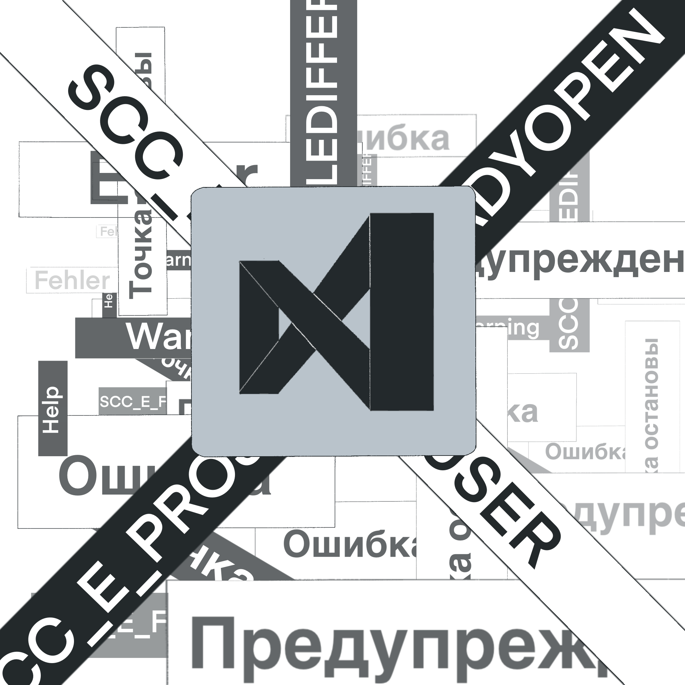

*Название аномалии*
Описание аномалии
B.F.U.-101 с виду представляет собой обычную программу Visual Studio 2015. В целом, функционирует идентично, но любая ошибка в коде будет влиять на окружающее нас естество тем или иным образом. Самое страшное - точка остановы. Оно вызвала несколько небольших землетрясений в [ЗАСЕКРЕЧЕНО] году, неестественная деформация тел без повреждений (даже если такая деформация физически невозможна), а также отключение техники в радиусе ██ км.
Эксперименты
1. Физическая попытка уничтожения B.F.U.-101 приводило к появлениям ошибкам в коде, из-за чего
происходили разного рода катаклизмы.
2. Попытка удаление программы привела к удалению человека, который пытался ее стереть из нашего мира. Он
исчез на глазах
3. Заражением вируса тоже не помогло, впоследствии вспыхнула эпидемия [УДАЛЕНО]
4. Попытка переустановки системы привела к [ЗАСЕКРЕЧЕНО]
Руководитель Тарачков с его коллегами все еще ищут решение, как уничтожить этот объект.
Особые условия содержания
B.F.U.-101 не является объектов, для которого необходимо подготовить особые условия содержания. Эта
аномалия имеет возможность существовать только внутри электронно-вычислительной машины с версией Windows
10 версии 1909 или старше, а также имеющей:
• процессор ARM64 или x64;
• не менее 4 ГБ ОЗУ;
• место на жестком диске от 850 МБ;
• видеоадаптер с минимальным разрешением 1366 на 768 пикселей.
Воздействие аномалии на человека
Не беспокойтесь, не один ученый пострадал
(В смысле куча ученых пострадало, (!!!) НЕ включать эти скобки в итоговый продукт)